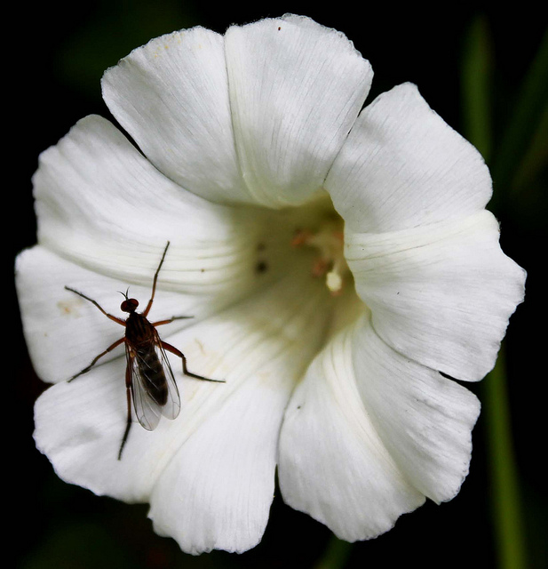

clipping paths restrict drawing to a particular area of the canvas. Think of a clipping paths as masks areas where the mask is empty show through, while areas where the mask is opaque do not.
Any path can be clipping path. You simply draw the path as normal and then call the context's clip() function to create one.
